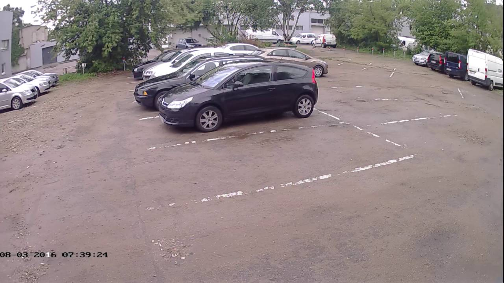

Welcome to vaizdo-kameros
WiFi vaizdo stebjėimo kameros | STEBKAM
2020.10.27 11:24
Registruotis Prisijungimas Prisijungimas Palyginti prekes (0) Prekių krepšelis Krepšelis tuščias. Viso prekių už 0 00 € su PVM Peržiūrėti krepšelį Iki nemokamo pristatymo liko 100 00 € su PVM Pristatysime nemokamai! Konsultuojame
nemokamai Garantija visoms
mūsų prekėms Pristatymas
visoje lietuvoje Mokėkite grynais,
kai gausite prekes VilniuJE +370 645 42336 kaune +370 671 76059 RAŠYKITE info@stebkam.lt Vaizdo stebėjimo sistemos ir kameros Namams Verslui IP vaizdo stebėjimo sistemos WiFi vaizdo stebėjimo kameros 4G kameros Hikvision vaizdo stebėjimo sistemos Dahua vaizdo stebėjimo sistemos Termovizorinės kameros HD-TVI TURBO vaizdo stebėjimo sistemos HD-CVI vaizdo stebėjimo sistemos Transporto vaizdo stebėjimo sistemos Medžiotojų kameros Analoginės vaizdo stebėjimo kameros Axis vaizdo stebėjimo kameros Mobotix vaizdo stebėjimo kameros Priedai Instrukcijos ir aplikacijos Slaptos kameros Autoregistratoriai Veiksmo kameros ĮRANGOS NUOMA SMART kameros NAUJIENA! Išmanūs įrenginiai Vaizdo telefonspynės/ Domofonai Išmanieji durų skambučiai Vaizdo telefonspynių komplektai Hikvision vaizdo telefonspynės Dahua vaizdo telefonspynės Audio telefonspynės Priedai Apsaugos ir priešgaisrinės sistemos Apsaugos sistemų komplektai Autonominiai dūmų detektoriai Belaidės AJAX apsaugos sistemos Belaidė įranga Laidinė įranga Radijobanginės sistemos GSM įranga Perimetro apsauga Eldes produkcija Adresinės priešgaisrinės sistemos Konvecinės priešgaisrinės sistemos Praėjimo kontrolė/ Darbo laiko apskaita Hikvision įeigos kontrolė ROGER įėjimo kontrolė PARADOX įėjimo kontrolė Autonominė atstumo įranga FoxSec Elektromagnetinės spynos Elektromagnetinės sklendės Išėjimo mygtukai Kortelės ir pakabukai Kita įranga Priedai ir instaliacinės medžiagos Maitinimas Atminties laikmenos (HDD/Micro SD) Akumuliatoriai / UPS Komutatoriai, signalo perdavimas Muliažai Kabeliai Mikrofonai Antgaliai laidams IR prožektoriai Monitoriai Maršrutizatoriai, POE šakotuvai Tvirtinimo elementai Informaciniai ženklai Kištukai ir priedai Komutacinės panelės Tinklo spintos Stebėjimo kamerų akcijos Kontaktai Vaizdo stebėjimo sistemos ir kameros Namams Verslui IP vaizdo stebėjimo sistemos WiFi vaizdo stebėjimo kameros 4G kameros Hikvision vaizdo stebėjimo sistemos Dahua vaizdo stebėjimo sistemos Termovizorinės kameros HD-TVI TURBO vaizdo stebėjimo sistemos HD-CVI vaizdo stebėjimo sistemos Transporto vaizdo stebėjimo sistemos Medžiotojų kameros Analoginės vaizdo stebėjimo kameros Axis vaizdo stebėjimo kameros Mobotix vaizdo stebėjimo kameros Priedai Instrukcijos ir aplikacijos Slaptos kameros Autoregistratoriai Veiksmo kameros ĮRANGOS NUOMA SMART kameros NAUJIENA! Išmanūs įrenginiai Vaizdo telefonspynės/ Domofonai Išmanieji durų skambučiai Vaizdo telefonspynių komplektai Hikvision vaizdo telefonspynės Dahua vaizdo telefonspynės Audio telefonspynės Priedai Apsaugos ir priešgaisrinės sistemos Apsaugos sistemų komplektai Autonominiai dūmų detektoriai Belaidės AJAX apsaugos sistemos Belaidė įranga Laidinė įranga Radijobanginės sistemos GSM įranga Perimetro apsauga Eldes produkcija Adresinės priešgaisrinės sistemos Konvecinės priešgaisrinės sistemos Praėjimo kontrolė/ Darbo laiko apskaita Hikvision įeigos kontrolė ROGER įėjimo kontrolė PARADOX įėjimo kontrolė Autonominė atstumo įranga FoxSec Elektromagnetinės spynos Elektromagnetinės sklendės Išėjimo mygtukai Kortelės ir pakabukai Kita įranga Priedai ir instaliacinės medžiagos Maitinimas Atminties laikmenos (HDD/Micro SD) Akumuliatoriai / UPS Komutatoriai, signalo perdavimas Muliažai Kabeliai Mikrofonai Antgaliai laidams IR prožektoriai Monitoriai Maršrutizatoriai, POE šakotuvai Tvirtinimo elementai Informaciniai ženklai Kištukai ir priedai Komutacinės panelės Tinklo spintos Stebėjimo kamerų akcijos Kontaktai Pradžia / Vaizdo stebėjimo sistemos ir kameros / WiFi vaizdo stebėjimo kameros
Vaizdo stebėjimo sistemos ir kameros
Namams Verslui IP vaizdo stebėjimo sistemos WiFi vaizdo stebėjimo kameros Rekomenduojamos WiFi kameros WiFi kamerų komplektai Visos WiFi kameros 4G kameros Hikvision vaizdo stebėjimo sistemos Dahua vaizdo stebėjimo sistemos Termovizorinės kameros HD-TVI TURBO vaizdo stebėjimo sistemos HD-CVI vaizdo stebėjimo sistemos Transporto vaizdo stebėjimo sistemos Medžiotojų kameros Analoginės vaizdo stebėjimo kameros Axis vaizdo stebėjimo kameros Mobotix vaizdo stebėjimo kameros Priedai Instrukcijos ir aplikacijos Slaptos kameros Autoregistratoriai Veiksmo kameros ĮRANGOS NUOMA SMART kameros NAUJIENA! Išmanūs įrenginiaiNaujienlaiškis
D.U.K Pirkimo sąlygosWiFi vaizdo stebėjimo kameros
Šioje kategorijoje rasite valdomas WiFi vaizdo stebėjimo kameras už patrauklią kainą. Kameros su nuotolinio valdymo galimybe, prisijunkite kompiuteriu ar mobiliuoju telefonu, matykite ir girdėkite, kas vyksta patalpoje. Kai kurios kameros turi sukiojamą objektyvą ir kt. pažangias funkcijas. Vaizdo stebėjimo kameros - tai nedidelė investicija, kuri gali palengvinti Jūsų gyvenimą. Daugelį tokių kamerų galėsite įsirengti vos per keletą minučių. Stebėkite, ką veikia Jūsų augintiniai, ar vaikai ruošia pamokas, ar auklė elgiasi tinkamai kad ir kur bebūtumėte. Kilus klausimams, susisiekite su mūsų konsultantais. Visus produktus išbandyti ir apžiūrėti galite STEBKAM parduotuvėje adresu: J. Kubiliaus g. 16, Vilniuje. Vaizdo stebėjimo sistemų projektavimas. Vaizdo stebėjimo sistemų montavimas. Apsaugos sistemų montavimo darbai.
Rekomenduojamos WiFi kameros WiFi kamerų komplektai Visos WiFi kameros 1 - 32 iš 41 1.3 Megapikselio vidaus WiFi kamera EZVIZ Mini O CS-CV206-C0 720p vidaus Wi-Fi kamera2.8mm objektyvasIki 7.5 m IR apšvietimasDvipusis garso ryšysDienos/nakties automatinis perjungimasPalaiko SD kortelę (iki 128GB) Prekė išparduota. Susisiekite Į palyginimą Iš palyginimo Palyginti (0) 1.3 Megapikselio vidaus WiFi kamera EZVIZ Mini O CS-CV206-C (Juoda)720p vidaus Wi-Fi kamera2.8mm objektyvasIki 7.5 m IR apšvietimasDvipusis garso ryšysDienos/nakties automatinis perjungimasPalaiko SD kortelę (iki 128GB)
Prekė išparduota. Susisiekite Į palyginimą Iš palyginimo Palyginti (0) 1 megapikselio IP kamera EZVIZ CS-C1C, WiFi, MicroSD, IR naktinis matymas1 Megapikselio,720P raiškos vidaus Wi-Fi kamera,720p vaizdo įrašymas tikru laiku, 92° horizontalus matymo kampas, Iki 12m IR apšvietimas. Dvipusis audio. Vieta SD kortelei (iki 256GB talpos).
42 26 € su PVM Į palyginimą Iš palyginimo Palyginti (0) Nuotolinė Kameros Konfigūracija Prekė išparduota. Susisiekite Į palyginimą Iš palyginimo Palyginti (0) Saulės baterija EZVIZ CS-CMT-SOLAR PANEL Saulės baterija montuojama ant lubų arba sienosDarbinė termperatūra -20 to 45 CDarbo sąlygos: drėgnumas iki 95 %Apsaugos lygis IP66Išmatavimai 153 x 80 x 2Veikimas 5V - 400mA - 2W tiekiama su maitinimo kabeliu ir montavimo kronšteinu Prekė išparduota. Susisiekite Į palyginimą Iš palyginimo Palyginti (0) EZVIZ FloodLight Cam CS-LC1-A0-1B2WPFRL 2.8mm Prekė išparduota. Susisiekite Į palyginimą Iš palyginimo Palyginti (0) 1 megapikselio valdoma IP vidaus kamera EZVIZ CS-C6CN, WiFi, MicroSD, IR naktinis matymas1 Megapikselio 720P raiškos vidaus valdoma Wi-Fi kamera,720Pvaizdo įrašymas tikru laiku,90° horizontalus matymo kampas, Iki 10m IR apšvietimas. Dvipusis audio. Vieta SD kortelei (iki 256GB talpos). 340 laipsnių horizontalus ir 55 vertikalus pasukimo kampas.
54 99 € su PVM Į palyginimą Iš palyginimo Palyginti (0) EZVIZ Mini O Plus CS-CV206-C0-3B2WFR 1080p vidaus Wi-Fi kamera2.8mm objektyvasIki 7.5m IR apšvietimasDvipusis garso ryšysDienos/nakties automatinis perjungimasPalaiko SD kortelę (iki 128GB) Prekė išparduota. Susisiekite Į palyginimą Iš palyginimo Palyginti (0) 2 megapikselių IP kamera EZVIZ CS-C1C-D0, WiFi, MicroSD, IR naktinis matymas2 Megapikselių,1080P raiškos vidaus Wi-Fi kamera,1080P vaizdo įrašymas tikru laiku, 106° horizontalus matymo kampas, Iki 12m IR apšvietimas. Dvipusis audio. Vieta SD kortelei (iki 256GB talpos).
63 90 € su PVM Į palyginimą Iš palyginimo Palyginti (0) 4 Megapikselių lauko/vidaus IP kamera Reolink RLC-410W ,WiFi, MicroSD, IR pašvietimas iki 30 metrųIšmanūs judesio aptikimo pranešimai suteiks jums galimybę nepraleisti kas vyksta jūsų saugomame perimetre. Pranešimus galite gauti telefone per reolink programėlę, arba į elektroninė paštą.
67 00 € su PVM Į palyginimą Iš palyginimo Palyginti (0) EZVIZ ez360 Plus CS-CV246-B0-3B2WFR1080p Wi-Fi kamera4mm objektyvas360° horizontalus FOVIšmanus sekimasIki 10m IR apšvietimasDvipusis garso ryšysVieta SD kortelei (iki 128GB)
Prekė išparduota. Susisiekite Į palyginimą Iš palyginimo Palyginti (0) 2 Megapikselių IP kamera EZVIZ CS-CV310-A0-1C2WFR (C3WN),WiFi, MicroSD, IR naktinis matymas2 Megapikselių, 1080P raiškos vidaus Wi-Fi kamera ,1080P vaizdo įrašymas tikru laiku, 90° horizontalus matymo kampas, Iki 30m IR apšvietimas. Vieta SD kortelei (iki 256GB talpos).
Prekė išparduota. Susisiekite Į palyginimą Iš palyginimo Palyginti (0) 1 Megapikselio Wi-fi kamera EZVIZ Husky Air CS-CV310-A0-3B1WFR1 MP, 1080P internet bullet kamera, Palaiko 2.4GHz Wi-Fi, IR apšvietimas iki 30m, Palaiko Micro SD kortelę, iki 128GB, IP66.
Į palyginimą Iš palyginimo Palyginti (0) 2 Megapikslelių kamera EZVIZ CS-CV246-A0-1C2WFR EZ360/C6CN 2MP IP kamera D/N EZVIZ CS-CV246-A0-1C2WFR (ez360/C6CN) 4mm(~82°) Valdoma Wi-Fi IR pašv. iki 10m Micro SD iki 256GB Prekė išparduota. Susisiekite Į palyginimą Iš palyginimo Palyginti (0) 2 megapikselių valdoma IP vidaus kamera EZVIZ CS-C6N, WiFi, MicroSD, IR naktinis matymas2 Megapikselių,1080P raiškos vidaus valdoma Wi-Fi kamera,1080P vaizdo įrašymas tikru laiku, 85° horizontalus matymo kampas, Iki 10m IR apšvietimas. Dvipusis audio. Vieta SD kortelei (iki 256GB talpos). Išmanusis judančio objekto sekimas, dvipusis audio ryšys. 340 laipsnių horizontalus ir 55 vertikalus pasukimo kampas.
Prekė išparduota. Susisiekite Į palyginimą Iš palyginimo Palyginti (0) Bazinė stotis EZVIZ CS-W2D 2.4GHzIki 6 Wi-Fi kamerųSirena iki 100dB 79 99 € su PVM Į palyginimą Iš palyginimo Palyginti (0) 2 Megapikselių Ezviz valdoma kamera EZVIZ CV-248, WiFi, MicorSD, garsiakalbis ir mikrofonas, naktinis matymasWIFI mini Dome PT kamera2 Megapixel 1/3” Progressive Scan CMOS4mm objektyvasIki 10 metrų IR apšvietimasPalaikoma iki 128GB SD kortelė
90 00 € su PVM Į palyginimą Iš palyginimo Palyginti (0) EZVIZ CS-CV310-A0-1B2WFR F42Mpx, 1080P lauko bullet kameraTrue Day/Night, automatinis perjungimasPalaiko 2.4GHz Wi-FiIR apšvietimas iki 30 metrųPalaiko Micro SD kortelę, iki 128GBIP66
Prekė išparduota. Susisiekite Į palyginimą Iš palyginimo Palyginti (0) 4 megapikselių WiFi IP kamera Dahua C46 Prekė išparduota. Susisiekite Į palyginimą Iš palyginimo Palyginti (0) EZVIZ CS-CV240-B0-21WFR WIFI PT kamera, 1.3 Mpx raiška1280X960Dvipusis garso ryšysAutomatinis PT sekimasIšmani garso lokalizacijaIki 10 metrų IR apšvietimasVieta SD kortelei iki 128GB Prekė išparduota. Susisiekite Į palyginimą Iš palyginimo Palyginti (0) IP kamera cilindrinė 2MP su IR iki 30m, WIFI, SD iki 128GB, 2.8 Prekė išparduota. Susisiekite Į palyginimą Iš palyginimo Palyginti (0) EZVIZ CS-CV310-A0-1B2WFR F2.82Mpx, 1080P lauko bullet kameraTrue Day/Night, automatinis perjungimasPalaiko 2.4GHz Wi-FiIR apšvietimas iki 30 metrųPalaiko Micro SD kortelę, iki 128GBIP66
Prekė išparduota. Susisiekite Į palyginimą Iš palyginimo Palyginti (0) EZVIZ C4W CS-CV228-A0-3C2WFR(2.8mm)F 2.8mm and 1080p IP kameraNight Vision iki 30 mAktyvi apsauga - sirena ir blykstėvipusis garso ryšysH.265 vaizdo suspaudimasPritaikomi garso pranešimaiWiFi 2.4 GHz ir įmontuotos antenosMicroSD iki 256 GB talpos
124 99 € su PVM Į palyginimą Iš palyginimo Palyginti (0) 4 Megapikselių Hikvision WiFi kupolinė kamera DS-2CD2141G1-IDW1 F2.8, microSD, mikrofonas, IR iki 30 metrų Pagal raišką 4 Megapikseliai4MP Hikvision kupolinė IP kamera, integruotas Wi-Fi pajungimas, 2.8mm objektyvas, itin platumas matymo kampas 100° horizontaliai, H.265, H.265+, H.264+, H.264 vaizdo suspaudimo technologijos taupiam talpyklos naudojimui, IR naktinis matymas iki 30metrų. Įmontuotas mikrofonas. Vieta microSD/SDHC/SDXC atminties kortelei, maksimali atminties kortelė iki 128GB. IP66 atsparumo aplinkos veiksniams standartas.
132 53 € su PVM Į palyginimą Iš palyginimo Palyginti (0) 4 Megapikselių Hikvision WiFi cilindrinė kamera DS-2CD2051G1-IDW1 F2.8, microSD, mikrofonas, IR iki 30 metrų Pagal raišką 5 Megapikseliai5MP Hikvision cilindrinė IP kamera, integruotas Wi-Fi pajungimas, 2.8mm objektyvas, itin platumas matymo kampas 100° horizontaliai, H.265, H.265+, H.264+, H.264 vaizdo suspaudimo technologijos taupiam talpyklos naudojimui, IR naktinis matymas iki 30metrų. Įmontuotas mikrofonas. Vieta microSD/SDHC/SDXC atminties kortelei, maksimali atminties kortelė iki 128GB. IP66 atsparumo aplinkos veiksniams standartas.
136 48 € su PVM Į palyginimą Iš palyginimo Palyginti (0) EZVIZ Mini Pano CS-CV346-A0-7A3WFR3MP Wi-Fi Fisheye kamera1.2mm objektyvas360° panoraminis vaizdasTrigubas HD vaizdasMetalinis korpusasDvipusis garso ryšysPalaiko MicroSD kortelę (iki 128GB)Iki 7.5m IR apšvietimas
Prekė išparduota. Susisiekite Į palyginimą Iš palyginimo Palyginti (0) 4 Megapikselių IP WIFI kamera Dahua HFW1435SP-W Pagal raišką 4 MegapikseliaiAukštos vaizdo raiškos, kompaktiška, lauko/vidaus, 4 megapikselių IP kamera. Naktinis EXIR pašvietimas iki 30 metrų. Rezoliucija 2688× 1520, vieta atminties kortelei iki 128 GB. Naujos kartos H.265 vaizdo suspaudimas.
151 25 € su PVM Į palyginimą Iš palyginimo Palyginti (0) 4 Megapikselių IP kamera HIKVISION DS-2CD2443-IW F2.8 WIFI Pagal raišką 4 Megapikseliai Įprastai pristatoma per:
1 - 2 darbo dienas
Itin aukštos vaizdo raiškos, vidaus naudojimui, 4 megapikselių IP kamera su Wi-Fi, galimybė įrašinėti į atminties kortelę. Naktinis pašvietimas iki 10 metrų. Rezoliucija 2688 × 1520. Garsinis aliarmas užfiksavus judesį.
2MP Wi-Fi kameraĮmontuota 5500 mAh pakraunama ličio baterijaPIR sensorius2.2mm objektyvasDvipusis garso ryšysVieta MicroSD kortelei (iki 128GB)Iki 7.5m IR apšvietimas
159 03 € su PVM Į palyginimą Iš palyginimo Palyginti (0) EZVIZ FloodLight Cam CS-LC1-A0-1B2WPFRL 2.8mm 1080p lauko Wi-Fi kamera2.8mm objektyvasPIR judesio aptikimasNaktinis pašvietimas iki 18 mIP65 apsaugaDvipusis garso ryšysDiena/naktisMicro SD kortelė iki 128GB Prekė išparduota. Susisiekite Į palyginimą Iš palyginimo Palyginti (0) Hikvision PT DS-2CV2Q21FD-IW F2.8 2MP PT(pan/tilt) IP kameraIntegruotas mikrofonas ir garsiakalbis, dvipusis audioAtminties kortelė (iki 128GB)5m IR pašvietimasĮntegruotas Wi-FiDC 5V ± 15 %, micro USB lizdas Prekė išparduota. Susisiekite Į palyginimą Iš palyginimo Palyginti (0) -6 % Išmanioji Netatmo Welcome kamera su veidų atpažinimo funkcija 207 22 € su PVM 220 22 € Sutaupykite 13 00 € Į palyginimą Iš palyginimo Palyginti (0) 1 2 Aktualijos Apie mus Prekių pristatymas Atsiskaitymo būdai Prekių grąžinimas Kaip užsakyti Taisyklės Privatumo politika PREKIŲ KATALOGAS Namams Verslui IP vaizdo stebėjimo sistemos Analoginės sistemos Wi-Fi kameros Slaptos vaizdo stebėjimo kameros Automobiliui Priedai Pirkimo taisyklės Populiariausios prekės Akcijos Naujos prekės Grąžinimo sąlygos Elektroninė parduotuvė UAB "Visual solutions". Kodas: 302836463. PVM mokėtojo kodas: LT100007076112. J. Kubiliaus g. 16, LT-08236, Vilnius. Telefonas: +37064542336. Sąskaitos nr.: LT307300010132538667, AB Swedbank. Banko kodas: 73000, SWIFT: HABALT22. © 2020 UAB "Visual solutions". Be UAB "Visual solutions" sutikimo draudžiama kopijuoti ir platinti svetainėje esančią informaciją. Elektroninių parduotuvių nuoma verskis.lt Į viršų